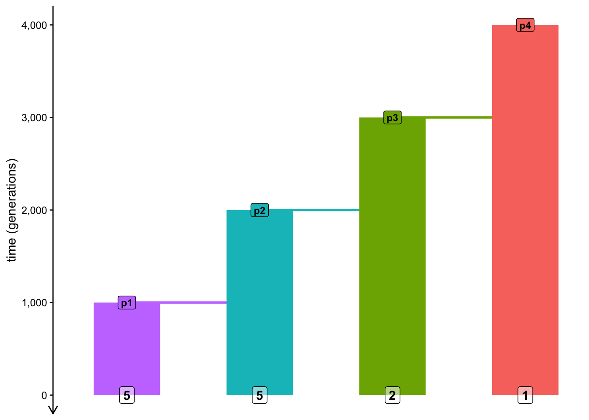
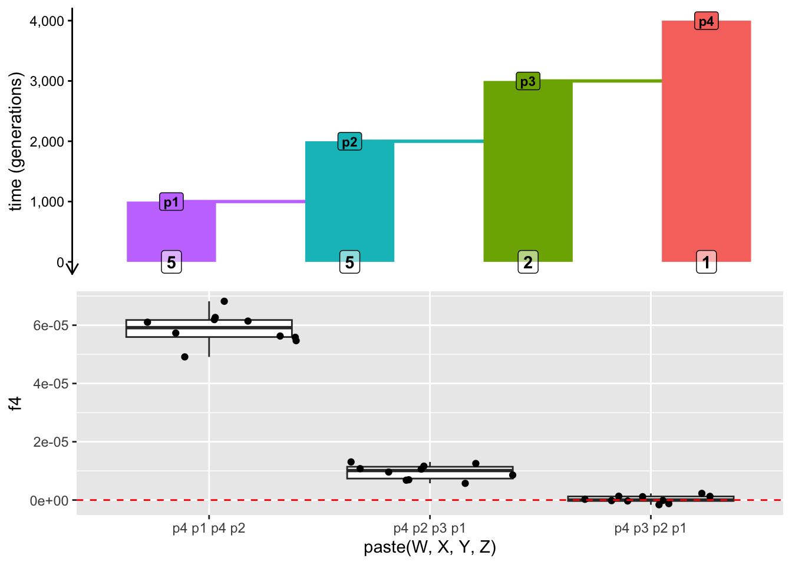

library(slendr)
init_env()
library(dplyr) # manipulating tabular data
library(ggplot2) # data visualization
library(cowplot) # composing plots into panels
library(purrr) # convenient looping functionsTree-based thinking
In our simulation exercises, we have so far focused on learning the ins and outs of slendr — how to construct demographic models, how to compute summary statistics, and how exploratory, simulation-based workflows can help us to study their behavior and limitations. Hopefully, you got a useful glimpse of how empowering simulation-based exploration is and how easily the approaches shown can be extended to other software methods and other kinds of models (something you will get to practice much more towards the end of our workshop).
In this chapter, we will play with slendr an interactive “popgen calculator” to quickly explore ideas and build intuition into how (and why) some more complex statistics work, specifically in the context of tree-sequences (or, sometimes, ancestral recombination graphs).
Unlike the previous chapters, which involved a lot of guidance and explanation to make sure you understand how slendr operates (and why), this chapter will be a bit more compressed and focused on interesting and useful bits of functionality to push your modeling with slendr even further.
Exercise: \(f_4\) as a measure of “overlapping paths” through a tree
We will begin by exploring perhaps the most critical component of population genetics research (particularly in the context of ancient DNA genomics)—the venerable \(f-4\)-statistic, formally established by Nick Patterson and David Reich.
Create a new script f_statistics.R and paste the following code into that script. Then, as always, read through the code, try to decipher what it’s going to do, then run it and compare your understanding with the visualization of the model.
library(slendr)
init_env()
p4 <- population("p4", time = 4000, N = 1000)
p3 <- population("p3", time = 3000, N = 1000, parent = p4)
p2 <- population("p2", time = 2000, N = 1000, parent = p3)
p1 <- population("p1", time = 1000, N = 1000, parent = p2)
model <- compile_model(populations = list(p1, p2, p3, p4), generation_time = 1)
schedule <- schedule_recording(
model, times = 0,
list(p1, 5), list(p2, 5), list(p3, 2), list(p4, 1)
)
plot_model(model, schedule = schedule)ts <-
msprime(model, sequence_length = 10e6, recombination_rate = 1e-8, schedule = schedule) %>%
ts_mutate(mutation_rate = 1e-8)
# writing `samples` over and over gets annoying, so let's switch that to `s`
s <- ts_names(ts, split = TRUE)Note: I numbered the population the “reversed way” because it makes more sense to my brain with regards to how \(f_4\) quartets are often arranged.
Noteclick to see the solution
plot_model(model, schedule = schedule)
Given the phylogenetic relationships between the populations encoded by our model, what value would you expect for \(f_4(p1, p2; p3, p4)\)? try to guess first without any coding, then compute the statistic with the ts_f4() function. does your simulation give you the result you might expect based on logic alone? if not, why could this be?
As suggested in the solution above, the reason we don’t get a perfectly zero expected value of the \(f_4\) is because of ILS and stochasticity. Let’s test this hypothesis now.
First, evaluate ts in your R console and note how many individual trees do you have in your 10 Mb tree-sequence.
Now, restart your R session (Session -> Restart R). Then, temporarily change the \(N_e\) of all lineages in your model to 1 and re-run your script to get a new ts and compute the same \(f_4\) statistic again. \(N_e\) of one implies ridiculously high amount of drift, which should eliminate ILS completely, giving us \(f_4\) close to its mathematical expectation of zero. Is this true? How many trees does your tree sequence have now?
Of course, changing \(N_e\) to value of 1 as we did above is a drastic measure of generally only theoretical utility. We could hardly get away with doing that, if we wanted to use simulations to make a point in our research paper.
How do we deal with the unavoidable stochasticity in our simulations then? This wasn’t much of a problem in exercises in the previous chapters, but we need the way to solve this to be able to get useful, applicable results.
Let’s look into this now.
Exercise: Reducing stochastic noise via simulation replicates
As a means to tame the stochasticity and help meaningful statistical patterns stand out, I recently implemented a function ts_replicates(). The way it works is like this:
ts_replicate(
n = <number of replicates>,
{
# ...
# a block of slendr code wrapped in { ... } containing a ts simulation
# and a slendr statistical computation we want to run in replicates
# ...
}
)Take a look at its manual page under ?ts_replicates, then use it to run 10 replicate simulations of the \(f_4\) statistic above (the one which should give us a zero expectation, but it wasn’t clear if it did or not), saving it to variable df. What format does the result have? When you visualize the distribution of \(f_4\) values across all replicates, are they more understandable in terms of the statistical expectation for this particular \(f_4\) quartet?
Note: If you want to speed up the replicate simulation, not that ?ts_replicate describes the means to run multiple simulations in parallel.
Note: I wrote this function a few days ago in a bit of a haste, specifically for this workshop, but also hoping it’ll be useful in daily research. Feedback appreciated!
Why do we put the ts <- ... simulation code inside the ts_replicate() block? What happens when you only run the ts_f4() command in the { ... block ... } inside ts_replicate()?
Exercise: Mutations versus branches
Do you recall how I told you earlier that you don’t have to add mutations to your tree sequence ts, and still be able to compute population genetic statistics? But that you can safely add them with ts_mutate() anyway?
The reason this works is because some very smart people figured out a mathematical duality between mutation-based and branch-based statistics—it actually doesn’t matter which way we compute our statistics, they give mathematically the same result.
On a practical level, we usually resort to mutation-based computation, which is how slendr statistical functions operate by default. But population genetics theory (described in the paper in detail) suggests that branch-based computation is less noisy than mutation-based computation.
Let’s test to what degree is this the case.
Modify your ts_replicate() command so that it internally produces two data frames:
df_mutations— computed withts_f4()same as before, except that you should add a new column to this data frame calledmodewith the value"mutataions",df_branches— computed withts_f4()by additionally setting its argumentmode = "branch", and adding a new column to this data frame calledmodewith the value"branches".
The last thing your ts_replicate() command should do is to combine them into a single data frame with rbind(df_mutations, df_branches).
Now visualize the distributions of \(f_4\)values between the two variations ofts_f4()` computation you just did. Is one of them noisier than the other? If so, why could this be?
Exercise: “Outgroup” \(f_3\) as a measure of overlap of tree paths
To ease into the problem of interpreting \(f\)-statistics as measures of overlapping paths in “population trees” (or, when admixture comes into the picture), in “population graphs”, let’s get back to our familiar \(f_3\) statistic.
Consider the model from our script f_statistics.R:

We know from the theory of \(f\)-statistics that the \(f_2\) statistic measures the branch length between two samples (two individuals, or groups of individuals)—see equation (1) in the linked paper.
Another thing established in the paper is the fact that any \(f\)-statistic can be expressed as a linear combination of \(f_2\) statistics.
For instance, equation 20b in the same paper states the following:
\[f_3(A; B, C) = \frac{1}{2} (f_2(A, C) + f_2(A, B) - f_2(B, C))\]
Draw a doodle of the population model above on a piece of paper which traces the paths indicated by the \(f_2\) statistics in this \(f_3\) equation, let’s say by assuming that A = p4, B = p1, C = p2. When you add up and subtract the paths from each other, do you arrive at the interpretation of the “outgroup” \(f_3\) as a measure of shared branch between B and C and the “outgroup” A?
Then, use the function ts_f2() and this equation to compute a “homemade” \(f_3(A = p4; B = p1, C = p2)\) statistic and compare it to the result produced by ts_f3() provided by slendr. Do you get the same result?
Exercise: \(f_4\) as a measure of overlap of tree paths
The usual application of \(f_4\) in practical research usually boils down to some variant of ABBA/BABA \(D\) statistics for testing admixture hypotheses. We will look at this later, but lets first look at \(f_4\) statistics in a more general case, as a measure of overlapping paths in population trees.
Consider the model from our script f_statistics.R:

df <- ts_replicate(n = 10, {
ts <-
msprime(model, sequence_length = 10e6, recombination_rate = 1e-8, schedule = schedule) %>%
ts_mutate(mutation_rate = 1e-8)
s <- ts_names(model, split = TRUE, schedule = schedule)
s1 <- ts_f4(ts, W = s["p4"], X = s["p3"], Y = s["p2"], Z = s["p1"])
s2 <- ts_f4(ts, W = s["p4"], X = s["p2"], Y = s["p3"], Z = s["p1"])
s3 <- ts_f4(ts, W = s["p4"], X = s["p1"], Y = s["p4"], Z = s["p2"])
bind_rows(s1, s2, s3)
})p_model1 <- plot_grid(
plot_model(model, schedule = schedule, proportions = TRUE),
ggplot(df, aes(paste(W, X, Y, Z), f4)) +
geom_boxplot() +
geom_jitter() +
geom_hline(yintercept = 0, linetype = "dashed", color = "red"),
nrow = 2
)
p_model1
s <- ts_names(ts, split = TRUE)
s1 <- ts_f4(ts, W = s["p4"], X = s["p3"], Y = s["p2"], Z = s["p1"])
s2 <- ts_f4(ts, W = s["p4"], X = s["p2"], Y = s["p3"], Z = s["p1"])
s3 <- ts_f4(ts, W = s["p4"], X = s["p1"], Y = s["p4"], Z = s["p2"])
bind_rows(s1, s2, s3)# A tibble: 3 × 6
W X Y Z statistic f4
<chr> <chr> <chr> <chr> <chr> <dbl>
1 p4 p3 p2 p1 f4(p4,p3;p2,p1) -0.00000833
2 p4 p2 p3 p1 f4(p4,p2;p3,p1) -0.00000309
3 p4 p1 p4 p2 f4(p4,p1;p4,p2) 0.0000419 Exercise: Estimating ancestry proportions
Exercise: How many unique f4 quartets are there?
When playing with \(f\)-statistics in this chapter, you’ve probably noticed various symmetries in \(f_4\) (but also other \(f\)-statistics) depending on the arrangement of their “configuration” (order of populations). As a trivial example, an \(f_3(A; B, C)\) and \(f_3(A; C, B)\) will give you exactly the same value.
Try to figure out, how many unique \(f_4\) values involving a single quartet (our p1, p2, p3, and p4 populations) are there. How about how many absolute values? You can answer this either by drawing and doodling on paper, but freel free to also use computer simulations if you’d like!
Exercise: \(f_4\) as a a hypothesis test for admixture
library(slendr)
init_env()
p4 <- population("p4", time = 4000, N = 1000)
p3 <- population("p3", time = 3000, N = 1000, parent = p4)
p2 <- population("p2", time = 2000, N = 1000, parent = p3)
p1 <- population("p1", time = 1000, N = 1000, parent = p2)
gf <- gene_flow(from = p3, to = p2, start = 500, end = 100, proportion = 0.13)
model_gf <- compile_model(
populations = list(p1, p2, p3, p4),
generation_time = 1,
gene_flow = gf
)
schedule <- schedule_recording(model_gf, times = 0, list(p1, 5), list(p2, 5), list(p3, 2), list(p4, 1))
df_gf <- ts_replicate(
n = 20, {
ts <-
msprime(model_gf, sequence_length = 1e6, recombination_rate = 1e-8, schedule = schedule) %>%
ts_mutate(mutation_rate = 1e-8)
s <- ts_names(model_gf, split = TRUE, schedule = schedule)
df_mutations <- ts_f4(ts, W = s["p1"], X = s["p2"], Y = s["p3"], Z = s["p4"])
df_mutations$mode <- "mutations"
df_branches <- ts_f4(ts, W = s["p1"], X = s["p2"], Y = s["p3"], Z = s["p4"], mode = "branch")
df_branches$mode <- "branches"
rbind(df_mutations, df_branches)
})